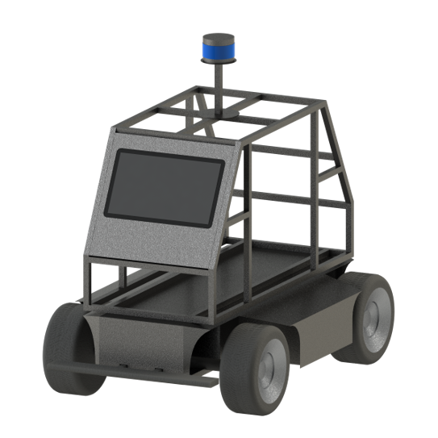

Yan Bingjie (闫冰洁)
Undergraduate student on Federated Learning and Robotics
 I am an undergraduate student in the School of Computer Science and Technology at Hainan University. My research interests are in federated learning and robotics.
I am an undergraduate student in the School of Computer Science and Technology at Hainan University. My research interests are in federated learning and robotics.
Link:
 GitHub,
Google Scholar,
GitHub,
Google Scholar,
 Bilibili,
Bilibili,
 Blog
Blog
Contact:
bj.yan.pa@qq.com
CV:
 CV(CN),
CV(EN)
CV(CN),
CV(EN)
News
- [June 2021] Two software copyrights have been applied for.
- [June 2021] Applications for two patents have been accepted.
- [June 2021] Our paper "Experiments of Federated Learning for COVID-19 Chest X-ray Images" was published in the Communications in Computer and Information Science(CCIS, ISSN: 1865-0929, EI-indexed)
- [June 2021] The projects FedMedical and 5G Road Detection Patrol Car won the silver and gold prize of The 7th China Internation College Students' 'Internet +' Innovation and Entrepreneurship Competition in Hainan
- [June 2021] The project FedMedical won the second prize of The 16th Pan-Pearl River Delta+ College Students Computer Design Competition in Hainan
- [May 2021] The project FedMedical won the first prize of The 2021 Chinese College Students Computer Design Competition in Hainan
- [May 2021] The project FedMedical won the third prize of The 'Challenge Cup' College Students Extracurricular Science & Technology Work Contest in Hainan
- [April 2021] Our paper "FedCM: A Real-time Contribution Measurement Method for Participants in Federated Learning" was accepted by IJCNN 2021(CCF-C)
- [November 2020] Our paper "Experiments of Federated Learning for COVID-19 Chest X-ray Images" was accepted by ICAIS 2021
Project Highlights
Fed Medical
We designed a medical image recognition software based on federated learning that allows for multi-party federation while protecting the privacy of patient data. In the aspect of data, we aggregate several published datasets on the Internet. In terms of models, we fused four models including ResNet and COVID-Net for model fusion to enhance system stability and generalization capability. We use GradCAM++ to visualize the convolutional layers for annotating lesion sites, and finally the software can generate medical reports automatically. In addition, we propose the FedCM contribution evaluation algorithm in the multiparty contribution measurement.
[code] 
 |
 |
Note: Key Projects of Innovation and Entrepreneurship of Hainan University (No. 20210102, Hosted); College Student Innovation Training Program (Hosted).
Mid Air Draw
Mid Air Draw comes from my small idea. We label the data ourselves and use YOLOv5 for gesture recognition and finger key point recognition. It is able to interact with PPT and other software to achieve the function of mid-air drawing.
[demo]
[code]

 |
5G Road Detection Patrol Car
We designed an unmanned road inspection robot based on 5G and multi-sensor fusion for city patrol. The main functions are multi-sensor fusion-based detection of road cracks, potholes and other defects and reporting them to the cloud, and parking violation detection. For mapping and localization, we adapt and improve the algorithm based on LeGO-LOAM. For road detection, we have trained our own model based on Yolov5, and the F1-score reached 0.68.
|  |
Note: Key Projects of Innovation and Entrepreneurship of Hainan University (No. 20210106, Participated).
Publications
 FedCM: A Real-time Contribution Measurement Method for Participants in Federated Learning (B. Yan, B. Liu, L. Wang, Y. Zhou, Z. Liang, M. Liu and C. Xu), In IJCNN, 2021,
Oral Presentation.
FedCM: A Real-time Contribution Measurement Method for Participants in Federated Learning (B. Yan, B. Liu, L. Wang, Y. Zhou, Z. Liang, M. Liu and C. Xu), In IJCNN, 2021,
Oral Presentation.
To appear.
 [arXiv]
[code]
[arXiv]
[code]

 Experiments of Federated Learning for COVID-19 Chest X-ray Images (B. Yan, J. Wang, J. Cheng, Y. Zhou, Y. Zhang, Y. Yang, L. Li, H. Zhao, C. Wang and B. Liu), In ICAIS, 2021.
Experiments of Federated Learning for COVID-19 Chest X-ray Images (B. Yan, J. Wang, J. Cheng, Y. Zhou, Y. Zhang, Y. Yang, L. Li, H. Zhao, C. Wang and B. Liu), In ICAIS, 2021.
 [bib]
[arXiv]
[bib]
[arXiv]
 An Improved Method for the Fitting and Prediction of the Number of COVID-19 Confirmed Cases Based on LSTM (B. Yan, J. Wang, Z. Zhen, X. Tang, Y. Zhou, G. Zheng, Q. Zou, Y. Lu, B. Liu, W. Tu and N. Xiong), In Computers, Materials and Continua 64 (3), 2020.
An Improved Method for the Fitting and Prediction of the Number of COVID-19 Confirmed Cases Based on LSTM (B. Yan, J. Wang, Z. Zhen, X. Tang, Y. Zhou, G. Zheng, Q. Zou, Y. Lu, B. Liu, W. Tu and N. Xiong), In Computers, Materials and Continua 64 (3), 2020.
[bib]
[pdf]
Membership
President of IEEE Hainan University Branch.
Vice president and Co-Founder of Association of Robotics and Artificial Intelligence in Hainan University.
Minister of Media and Communications Department, Young Volunteers Association, School of Computer Science and Technology, Hainan University.